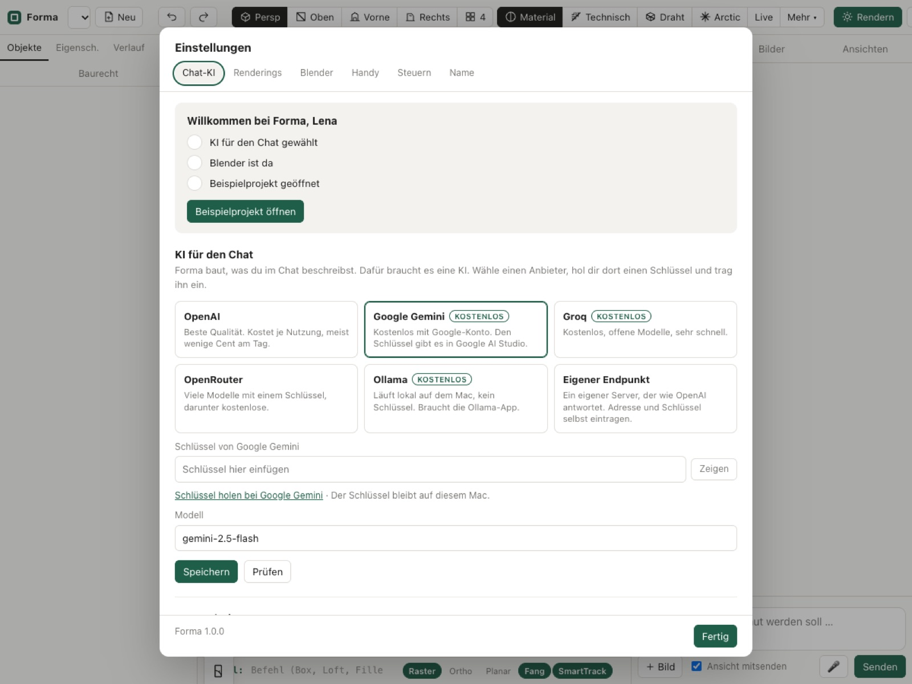
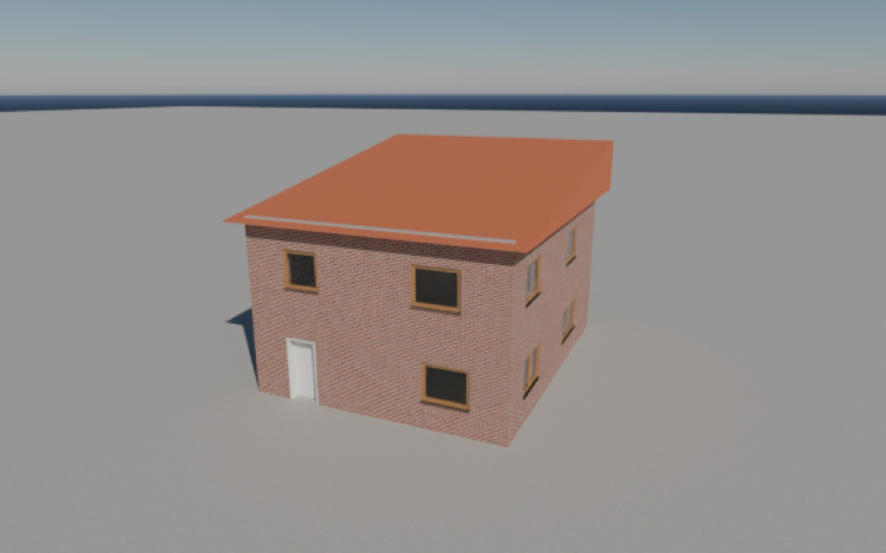
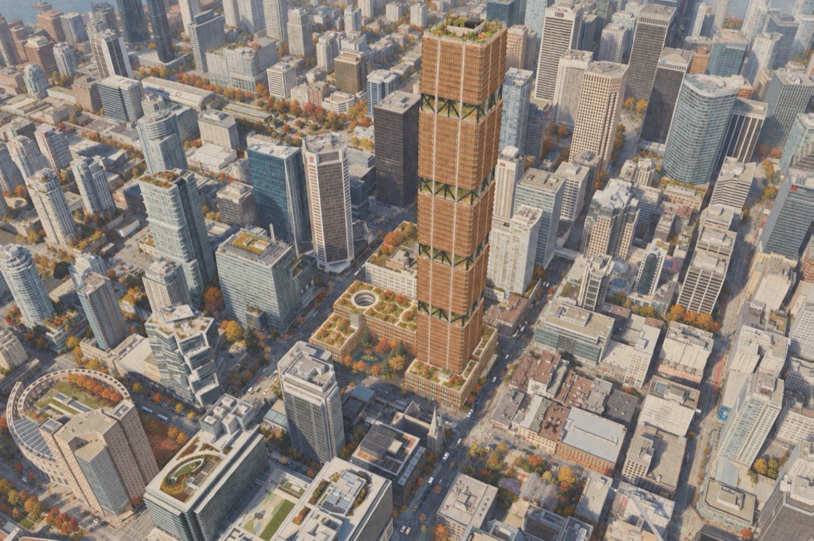

Echte Bauteile
Wände, Decken, Stützen, Fenster, Treppen. Mit Maßen, Schichten und Mengen, nicht nur Flächen.
Du schreibst, was du willst. Forma setzt echte Bauteile, rendert auf deinem Mac und schreibt die Pläne als PDF.
macOS 13 oder neuer. 45 € im Monat. Nach drei Monaten nicht zufrieden? Alles zurück.



Die App laden, in den Programme-Ordner ziehen, öffnen.
Den Schlüssel aus deiner Bestätigungsmail in die Einstellungen kopieren.
Im Chat schreiben: „Zwei Geschosse, Flachdach, Fenster nach Süden.“ Forma baut die Bauteile.
Blick wählen, Stimmung wählen, rendern. Pläne als PDF, Modell als 3dm oder IFC.
Wände, Decken, Stützen, Fenster, Treppen. Mit Maßen, Schichten und Mengen, nicht nur Flächen.
Wer Rhino kennt, tippt die bekannten Befehle. Der Chat versteht beides.
Das Modell geht weiter nach Rhino, Revit, ArchiCAD oder zum Tragwerksplaner.
Blender Cycles läuft lokal, so oft du willst. Dazu KI-Renderings für Stimmung und Vegetation.
Grundrisse, Schnitte, Ansichten und Tafeln kommen fertig aus dem Modell.
Unterwegs im Browser bedienen. Oder aus Claude Code, Codex und Gemini CLI steuern.
45 € im Monat zzgl. MwSt.
Nach drei Monaten nicht zufrieden? Du bekommst alles zurück.
Einen Mac mit macOS 13 oder neuer und Internet für die KI. Für Renderings installiert Forma Blender von blender.org, ein Klick genügt.
Noch nicht. Forma läuft auf dem Mac. Schreib uns, wenn du eine Windows-Version willst, wir zählen mit.
Auf deinem Mac. Projekte, Modelle und Renderings bleiben lokal. An die KI gehen nur die Texte deines Chats und, wenn du es willst, das Bild für ein KI-Rendering.
Nein. Im Abo ist die KI enthalten. Wer eigene Schlüssel hat (OpenAI, Gemini, Groq, OpenRouter, Ollama), kann sie in den Einstellungen eintragen.
Nein. Forma stellt Kamera, Licht und Materialien selbst ein und startet Blender im Hintergrund. Du siehst nur das Bild.
Jederzeit mit einem Klick im Kundenkonto. Das Abo läuft bis zum Monatsende, danach ist Schluss. Deine Dateien bleiben bei dir.